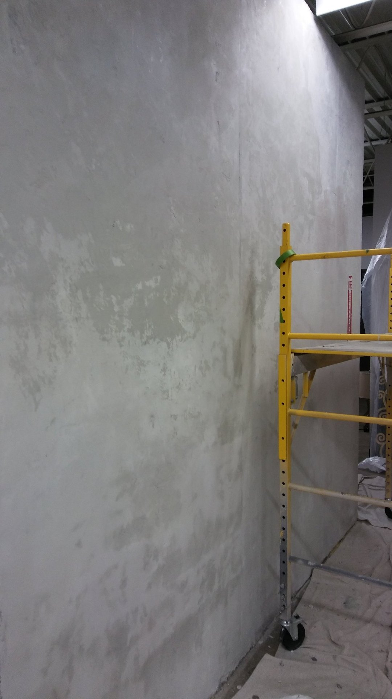
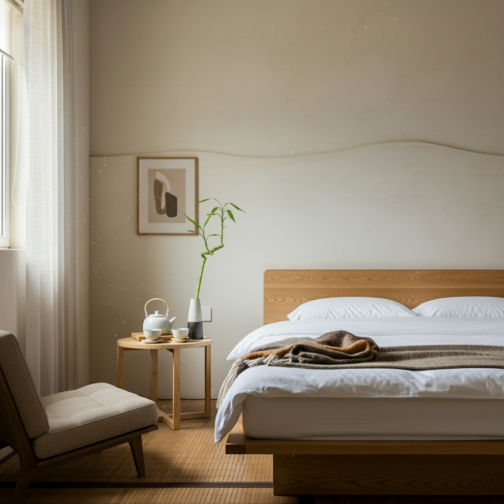
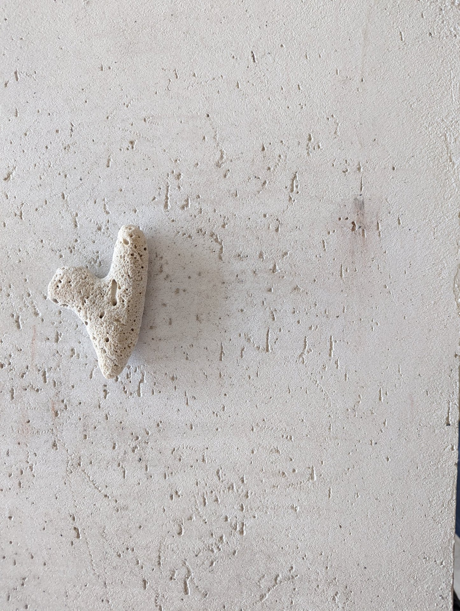
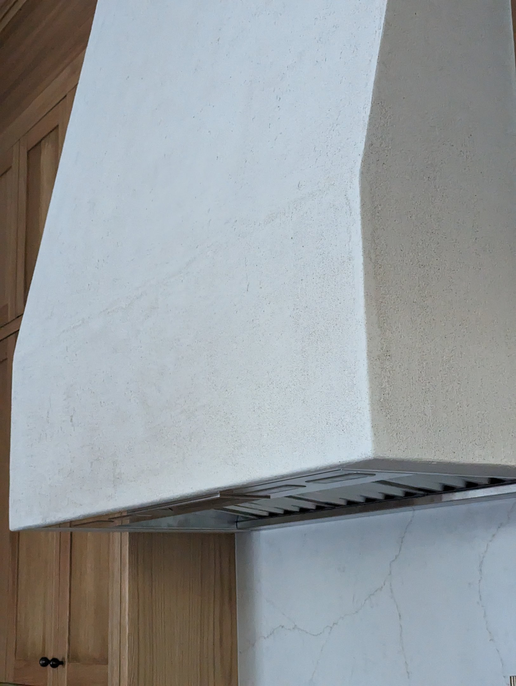

Fireplace Feature
Bespoke Troweled MT Fireplace
Floor-to-ceiling custom plaster fireplace surround in warm earth tones with subtle trowel movement.
Every project below was hand-applied by Organic Finishes LLC—from seamless microcement wet rooms and commercial storefronts to statement fireplaces, built-in shelving, and rendered brick masonry.
Floor-to-ceiling custom plaster fireplace surround in warm earth tones with subtle trowel movement.

Seamless 2–3 mm waterproof microcement uniting shower floor, walls, bench, and niche without grout lines.

Continuous high-traffic microcement floor, display plinths, and cash wrap sealed with commercial polyurethane.

Unified custom lime plaster wrap connecting the central hearth and flanking built-in shelving.

Clean, monolithic hand-troweled plaster hearth offering warm organic contrast.

Precision hand-troweled mineral plaster wrapping recessed shelving and architectural corners.

Breathable earth-derived lime plaster applied directly over brick masonry for timeless texture.

Stone-burnished Moroccan hydraulic lime plaster with natural movement and water resistance.

Close-up view of river-stone compression and olive oil soap luster on Tadelakt plaster.

Troweled mineral concrete wall finish delivering raw architectural gravitas without structural weight.

Custom metallic coating system aged with authentic oxidation for dramatic architectural accents.

Hypoallergenic, zero-VOC mineral coating creating a calm, velvety sanctuary.

Breathable mineral coating that petrifies into the surface with soft, cloud-like movement.

Multi-coat mineral plaster hand-troweled to capture raking natural light across the room.

Subtle tonal variation and cool tactile smoothness achieved through multi-pass steel troweling.

Custom pigment-matched lime and clay plaster tailored to the homeowner's palette.